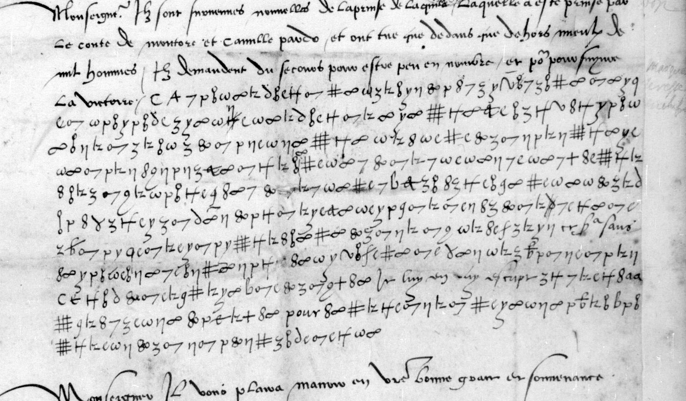

At a glanceKnown key applied · all but about 6 signs
- The letter
- Jean de Langeac, bishop of Avranches, French ambassador at Venice, to Anne de Montmorency, 14 January [1529]. A clear despatch with an eleven-line cipher block.
- Where
- Bibliothèque nationale de France, fr. 3083 no. 8, ff. 20–21 (Gallica btv1b90601328, views 35–36). One of the four letters of catalogue item 6.
- The cipher
- Lasry’s “Avranches’ cipher 1”: a simple substitution on graphic signs with a few homophones and signs for LL, SS and LE.
- How it was deciphered
- Lasry’s 2023 table, which Tomokiyo had partly reconstructed from the sibling fr. 3005 f. 107, applied to the leaf by eye from line strips, with four refinements.
- What it says
- Saint-Pol asked Langeac to obtain his leave from the Signoria; Venice refused and protested it would be “la totalle ruine des emprinses”.
- Still open
- A group of three or four signs and one of two signs.
- Credit
- George Lasry recovered the key and deciphered the letter in 2023; his decipherment was not published.
01 The letter and its key
The catalogue grouped this letter with three others to Montmorency (catalogue item 6). Each of the four is in its own key, and since 14 October 2026 each key has its own page: Gramont at Rome in 1529 (Gramont’s cipher, 1529), Gramont again in 1530 (Gramont’s cipher, 1530) and the cardinal de Mâcon in 1537, with his other letters in Mascon’s cipher. Each is a different cipher, with its own page.
The key here is George Lasry’s “Avranches’ cipher 1”, one of his tables dated 5 November 2023 on Satoshi Tomokiyo’s cryptiana; Tomokiyo had a partial table of the same key from the sibling letter fr. 3005 f. 107. Lasry also deciphered this letter in 2023 (personal communication, 21 September 2026), but neither site gives any plaintext. The leaf refines the table: a y-shaped sign with a zigzag descender is C; a 9 with a long curved tail is A in raison and V in secourir; a ɓ-shaped sign serves for P and for I; ₠ is LL and a crossed C is SS; 8∞ is LE, distinct from 8o = P; and a macron over ∞ stands for n (argēt).
02 Langeac, Venice, 14 January 1529

Cipher in capitals, clear in lower case, spelling of the leaf kept
MONSEIGNEVR DE SAINCT POL M’A CONMANDE RECHER[CHER] SON CONGE A CESTE SEIGNEVRIE, CE QV’ELLE N’A VOLV CONSENTIR, AINS A PROTESTE QVE S’IL SE DEPARTOIT QVE CE SEROIT LA TOTALLE RVINE DES EMPRINSES. ET ME SEMBLE QV’IL N’I A RAISON, VEV L’EMPRINSE DE MILLAN, LA VENVE DES ESPAIGNOLS AVEC ARGĒT POVR ICELLE SECOVRIR, ET LA PRIMEVERE APROCHER. IE CROY QV’IL NE DEPARTIRA SI LE FAICT […] sans LE CONSENTEMENT DE TOVS LES CONFEDERES, ET SI APORTEROIT […] VNG PREIVDICE IREPARABLE. Je luy ay escript AV MIEVLX QV’IL M’A ESTE POSSIBLE pour LE DIVERTIR DE CESTE OPINION, QVI EST PAR TROP DANGEREVSE.
In modern terms: Saint-Pol has told Langeac to ask the Signoria for his leave. Venice would not consent, and protested that if he left it would be the ruin of the enterprises. Langeac sees no reason for it, with the Milan enterprise in hand, Spanish money coming to relieve Milan and spring approaching, and has written to him as well as he could to turn him from an opinion “par trop dangereuse”.
The comte de Saint-Pol commanded the French army in Lombardy from the autumn of 1528 until his defeat at Landriano on 21 June 1529. So five months before Landriano the commander wanted to leave. Venice, the league’s paymaster in the north, refused his leave on the ground that the Milan enterprise was in hand. The year is not on the leaf, but it is fixed by Saint-Pol’s command and by the clear news that Aquila had been retaken for the French by the count of Montorio and Camillo Pardo Orsini in the Abruzzi campaign of winter 1528–29.
03 What remains uncertain
- A group of three or four signs before sans in line 7, and two signs before vng in line 9. Both are short and isolated, and no gloss or decipherment of the letter exists.
- The count of 442 letters read in cipher against about six unread signs is taken from the reading; no sign-by-sign alias file was kept for this short block.
04 Sources
- BnF, Français 3083, ff. 20–21: Gallica btv1b90601328, views 35–36.
- G. Lasry, key table “Avranches’ cipher 1” (5 November 2023), on S. Tomokiyo’s cryptiana, “George Lasry’s codebreaking”.
- S. Tomokiyo, “French Ciphers during the Reign of Francis I”: the partial table from fr. 3005 f. 107.
The reading, Lasry’s and Tomokiyo’s tables and the notes are in the repository (targets/langeac1529/); the Gallica tools are in targets/gramont1529/. Page images are not committed.